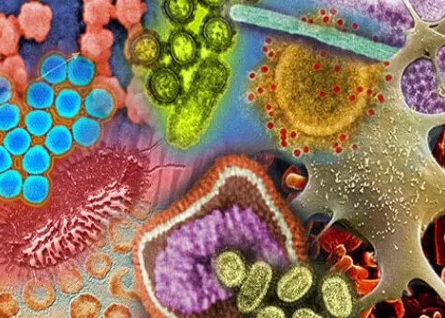
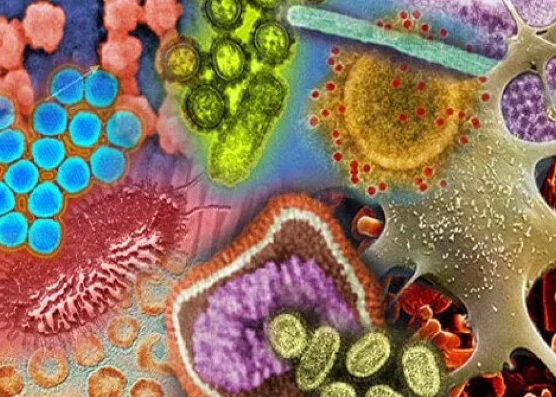

Respiratory Infections
Causes and Symptoms
Causes: Lower respiratory infections are caused by a variety of microbes, including bacteria, viruses and fungi. Often, a lower respiratory infection can be accompanied by a cold or flu. Lower respiratory infections can occur to anyone, but those most at risk include: Smokers.You get an upper respiratory infection when a virus (or bacteria) enters your respiratory system. For example, you might touch an infected surface or shake hands with a person who’s sick. You then touch your mouth, nose or eyes. The germs from your hands enter and infect your body.
symptomsYou may get symptoms, including:
- Cough .
- Fever .
- Hoarse voice.
- Fatigue and lack of energy.
- Red eyes.
- Runny nose.
- Sore throat.
- Swollen lymph nodes (swelling on the sides of your neck).